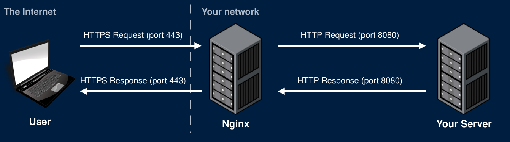

Reverse Proxy Servers - Nginx
Deploying your app behind nginx
HTTPS with Nginx
The Problem
- We want to use HTTPS
- Encrypts all web traffic
- Prefer not to modify your app code
- Makes our code more modular and portable
- Your HTTPS setup can change without changing your app
- Solution: Use a reverse proxy
Nginx
- Nginx has many uses and is very powerful software
- Recall that it was used for our RTMP ingest server
- For now, we'll use it here as a reverse proxy to enable HTTPS
- We'll setup HTTPS now. Later lectures will explain what HTTPS is and how it works
- One nginx can route requests
- On the project: route /register, /login, and /logout to your auth service, and everything else to your app
- Nginx could serve your static files
- Can route by domain name to host many apps on the same server
Nginx Strategy
- Use Nginx to listen for HTTPS requests
- Nginx needs a cert and private key
- Nginx will decrypt requests and forward them to your server as HTTP requests
- These unencrypted requests are sent over a local network and never touch the Internet
- They do not need to be encrypted
- Your server sends HTTP responses to Nginx
- Nginx encrypts and sends the HTTPS response over the Internet
- If Nginx gets an HTTP request (port 80) redirect the user to HTTPS (port 443)
Nginx Strategy

Certificates
OpenSSL
- OpenSSL is a very common SSL/TLS library
- Written in C
- Wrappers exist for many languages
- Can be used for many encryption needs
- Generating keys
- Signing certs
- Validating certs
- Can use OpenSSL in the command line to generate self-signed certificates
Self-Signed Certificate
openssl req -x509 -newkey rsa:4096 -keyout private.key -out cert.pem -days 365 -sha256 -nodes -subj "/C=US"- This command will generate a self-signed certificate and a private key
- Private key saved as private.key
- Certificate saved as cert.pem
- The browser warns every user: no certificate authority vouched for it
- Fine for testing. Not for a deployed app
Let's Encrypt
- A certificate authority that issues free certificates
- Trusted by every major browser
- Before issuing a certificate, it checks that you control the domain
- The script generates a random file and edits your nginx config to host the file
- It then asks for the file at your domain name
- Only the server your domain points to can serve that file
- If it gets the file, you must control that domain name
- Certbot automates all of this
Certbot
- Saves your certificate and private key:
/etc/letsencrypt/live/example.com/fullchain.pem/etc/letsencrypt/live/example.com/privkey.pem
- Edits your nginx config to use these files
Domain Names
- Register a domain name
- The GitHub Student Developer Pack includes a free domain for 1 year
- Add an A record that maps your domain to your server's public IP
example.com→159.89.179.140
- DNS changes can take minutes to hours to reach everyone
- It's often seconds, but be prepared in case it takes hours
- Get your DNS working before running Certbot
- Certbot cannot verify your domain name if you don't have one setup
Nginx Configuration
Redirect HTTP to HTTPS
- Any request on port 80 gets a 301 to the same path over HTTPS
$hostand$request_uriare filled in by nginx for each request- Certbot can set this up for you
Terminate TLS and Proxy
server {
listen 443 ssl;
server_name example.com;
ssl_certificate /etc/letsencrypt/live/yourgame.me/fullchain.pem;
ssl_certificate_key /etc/letsencrypt/live/yourgame.me/privkey.pem;
location / {
proxy_pass http://127.0.0.1:8080;
proxy_http_version 1.1;
}
}- localhost is an alias for 127.0.0.1
- Using 127.0.0.1 does not require resolution
- They can mostly be used interchangeably
WebSockets Through Nginx
location /websocket {
proxy_pass http://127.0.0.1:8080;
proxy_http_version 1.1;
proxy_set_header Upgrade $http_upgrade;
proxy_set_header Connection "upgrade";
}- location uses prefix routing by default
- Any path starting with /websocket gets routed with this config
- Upgrade and Connection apply to one hop only. Nginx drops them unless you set them again
WSS in the Front End
- A page loaded over HTTPS can't open a
ws://connection- The browser blocks it as mixed content
- Pick the protocol from the page's own protocol:
const protocol = location.protocol === "https:" ? "wss://" : "ws://";
const socket = new WebSocket(protocol + location.host + "/websocket");- The same code works at
http://localhost:8080and on your deployed domain
Deploying
Nginx in Deployment
- Two possible setups
- Nginx runs on your server directly
- Handles encryption
- Routes all traffic to your app
- Extra setup involved that is not part of docker compose
- Nginx runs in a docker container
- Easier to deploy -- docker compose up
- More difficult to run certbot
Nginx in Deployment - Recommendation
- Nginx on server or nginx in docker?
- Why not both?
- Run one Nginx instance on your server
- Only handles encryption
- Easy to run certbot
- Run another Nginx instance in a docker container
- Only handles routing between auth and app services
- Easy to deploy
Nginx with Docker Compose
services:
nginx:
image: nginx
ports:
- "8080:80"
volumes:
- ./nginx.conf:/etc/nginx/conf.d/default.conf- Only nginx publishes ports. Your app and database are reachable by name inside the compose network
- Never publish your database's port on a public server
- nginx.conf can be added to the container using a volume (shown) or create another Dockerfile for nginx
- In your config, use your service names for hostname (Not localhost or 127.0.0.1)